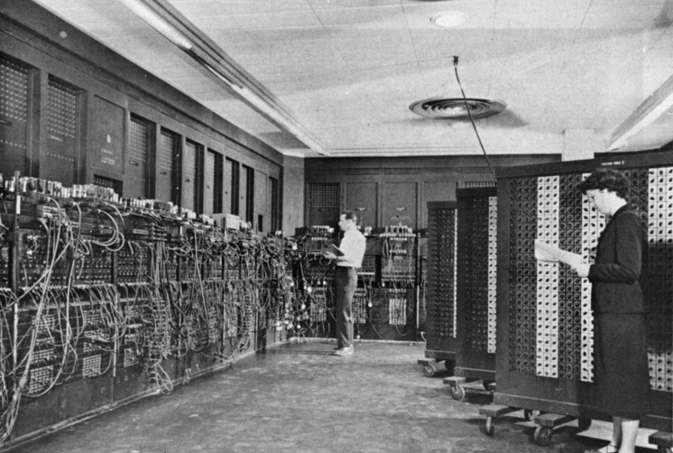

Razvoj računara
Istorija računara je duža od istorije računarskog hardvera i modernih računarskih tehnologija i uključuje istoriju metoda koje su bile namenjene olovci i papiru ili tabli i kredi.

×

Prvi programer je zapravo bila žena - Ada Bajron Lavlejs. Ada je bila inspirisana Bejbridžovim radom i verovatno je prva osoba koja je pronikla u neverovatne mogućnosti Bejbridžove analitičke mašine. Napisala je rad o Bejbridžovoj „Analitičkoj mašini“ koji se smatra prvim tekstom koji opisuje proces danas poznat kao kompjutersko programiranje. Ona je predvidela i da će analitičke mašine služiti za komponovanje muzike, doduše za to će biti potrebno da protekne čitav jedan vek.